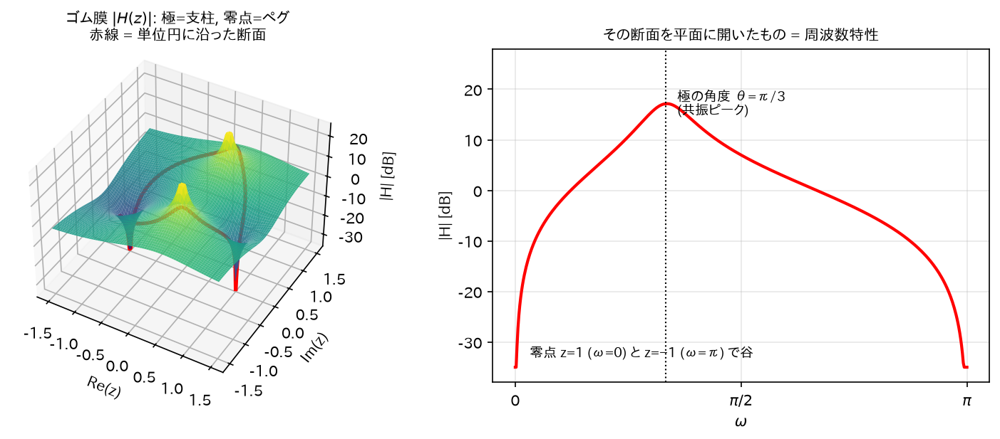
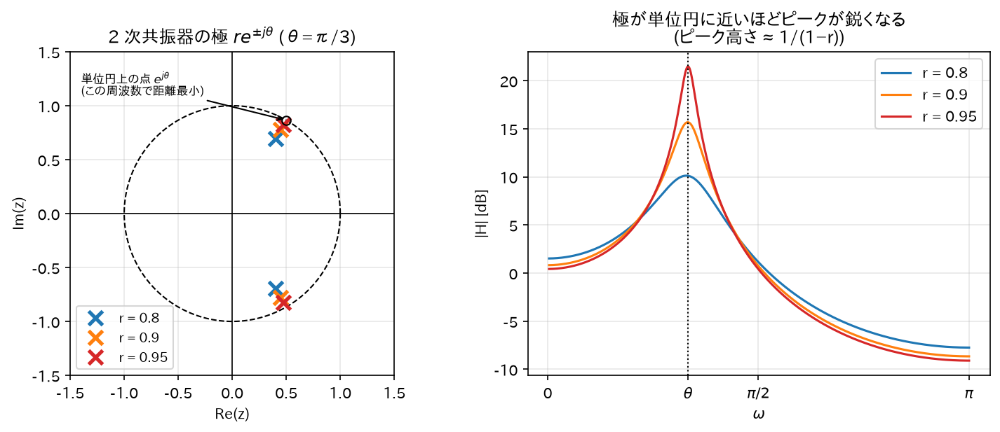

Chapter 06
伝達関数・極と零点・安定性
この章で「差分方程式 → 伝達関数 → 極零点 → 周波数特性と安定性」という IIR 解析の一本道を通す。
1. 差分方程式 — デジタルフィルタの実体
実装可能なデジタルフィルタは、次の線形定係数差分方程式で書ける:
- 第 1 項: 現在と過去の入力の重み付き和（フィードフォワード）
- 第 2 項: 過去の出力の重み付き和（フィードバック）← これがあるのが IIR
直感: 「今の出力 = 入力の混ぜ合わせ + 自分の過去の出力の混ぜ合わせ」。 フィードバック項があると、入力が止まった後も出力が自分自身を材料にして鳴り続けられる。 これが「無限インパルス応答」の源泉。
標準形として、すべてを左辺・右辺に整理した形も使う（\(a_0 = 1\)と正規化）:
2. 伝達関数の導出
差分方程式の両辺を Z 変換する。線形性と時間シフトの性質（05 章で導出済み:\(x[n-k] \leftrightarrow z^{-k}X(z)\)）より:
\(Y(z), X(z)\)はそれぞれ和の外に括り出せる:
よって伝達関数\(H(z) \equiv Y(z)/X(z)\)は:
一方、05 章の畳み込み定理より\(Y(z) = H(z)X(z)\)で、\(H(z)\)はインパルス応答\(h[n]\)の Z 変換でもある。 つまり:
差分方程式の係数\(\{a_k, b_k\}\)（実装コード）と、伝達関数\(H(z)\)（数学的解析）と、 インパルス応答\(h[n]\)（時間波形）は、同じフィルタの 3 つの顔である。
3. 極と零点
分子・分母は\(z^{-1}\)の多項式なので、因数分解できる。分子分母に\(z^{\max(M,N)}\)を掛けて\(z\)の多項式にしてから因数分解すると:
- \(q_i\): 零点 (zero) —\(H(z) = 0\)になる点。分子多項式の根。
- \(p_i\): 極 (pole) —\(H(z) = \infty\)になる点。分母多項式の根。
係数\(\{a_k, b_k\}\)が実数なら、極・零点は実数か、複素共役対で現れる （実係数多項式の根の性質:\(P(p) = 0\)の両辺の共役をとると\(\overline{P(p)} = P(\bar p) = 0\)）。
直感: ゴム膜のたとえ
\(|H(z)|\)を\(z\)平面上の高さと見なすと:
- 極 = テントの支柱。その点で高さが無限大に突き上がる。
- 零点 = 地面に打ったペグ。その点で高さが 0 に釘付けされる。
周波数特性\(|H(e^{j\omega})|\)は、このゴム膜を単位円に沿って一周切り取った断面の高さ。 極の近くを通れば山（ゲイン大）、零点の近くを通れば谷（ゲイン小）ができる。

4. 周波数特性の図形的解釈(導出)
\(z = e^{j\omega}\)を因数分解形に代入して絶対値をとる:
（\(|z^{N-M}| = |e^{j\omega}|^{N-M} = 1\)なので消える。絶対値は積・商に分配される:\(|AB| = |A||B|\)。）
ここで\(|e^{j\omega} - q_i|\)は、単位円上の点\(e^{j\omega}\)から零点\(q_i\)までのユークリッド距離である （複素数の差の絶対値 = 2 点間距離）。よって:
同様に偏角について\(\angle(AB/C) = \angle A + \angle B - \angle C\)より:
直感
単位円上を歩く点\(e^{j\omega}\)を想像する（\(\omega\): 0 → π）。
- 極に近づくと分母の距離が小さくなり、ゲインが跳ね上がる（共振ピーク）。
- 零点に近づくと分子の距離が小さくなり、ゲインが落ち込む（ノッチ）。
- 極を単位円ギリギリ内側に置くほどピークは鋭くなる（= Q が高くなる）。
フィルタ設計とは、通過させたい周波数の近くに極を、消したい周波数の上に零点を配置するゲームである。
5. 安定性の定理と導出(この章のクライマックス)
定理
因果的 LTI システムが BIBO 安定 ⟺ すべての極が単位円の内側（\(|p_i| < 1\)）にある。
導出
準備: 因果的で有理伝達関数を持つシステムのインパルス応答は、部分分数展開（05 章）により
の形になる（まず単根の場合を考える。\(M \geq N\)の場合に現れる\(\delta[n-k]\)型の有限項は有限和なので安定性に影響しない）。
（⇐）すべての\(|p_i| < 1\)⇒ 安定:
03 章の安定条件\(\sum_n |h[n]| < \infty\)を確認する。三角不等式より:
（等比級数は\(|p_i| < 1\)で収束。有限個の有限値の和は有限。）∎
（⇒）ある極\(|p_1| \geq 1\)⇒ 不安定:
対偶を示す。\(|p_1| \geq 1\)の極があるとする（\(A_1 \neq 0\)、簡単のため\(|p_1|\)が最大の極で他の極と大きさが異なるとする）。 このとき\(n \to \infty\)で
\(|p_i / p_1| < 1\)より括弧内の和の項は 0 に収束するので、十分大きい\(n\)で括弧内は\(|A_1|/2\)以上。よって
\(h[n]\)が 0 に収束しないので\(\sum |h[n]|\)は発散。BIBO 安定でない。∎
重根の場合: 重複度\(m\)の極には\(n^{m-1} p^n u[n]\)型の項が現れる（05 章の z 領域微分から導かれる）。 \(|p| < 1\)なら、任意の多項式次数に対して指数減衰が勝つ: \(\sum_n n^{m-1} |p|^n\)は例えばダランベールの判定法で、隣接項比
より収束。よって結論は変わらない。∎
直感
- 各極\(p_i\)は「\(p_i^n\)という余韻」を生む。\(|p_i|\)は 1 サンプルごとの減衰率。
- \(|p_i| < 1\): 余韻はだんだん小さくなる（安定）
- \(|p_i| = 1\): 余韻が永遠に減らない（発振器。境界）
- \(|p_i| > 1\): 余韻が毎サンプル成長する（発散 = スピーカーが「ピー！」と暴走）
- 零点は安定性に無関係。零点はどこにあってもよい（分子は出力を作る材料の混ぜ方であり、フィードバックしないから)。
- FIR は分母が 1（極は原点のみ）なので常に安定。IIR だけが安定性の検査を要求される。
6. 例: 2 次共振器で全部つなげる
極の導出: 分母\(= 0\)とおき、\(z^2\)を掛けて\(z^2 - 2r\cos\theta z + r^2 = 0\)。解の公式:
極は\(p = re^{j\theta}\)とその共役。すなわち半径\(r\)、角度\(\pm\theta\)の共役対。
対応する差分方程式（伝達関数の定義を逆にたどる）:
インパルス応答: 05 章末尾の結果より\(h[n] \propto r^n \cos(\theta n + \phi)\)型の減衰振動。
周波数特性: 単位円上の点が角度\(\theta\)付近を通るとき極までの距離が最小 (\(\approx 1-r\)) になり、 ゲインは約\(\frac{1}{1-r}\)倍に跳ね上がる。→ 中心周波数\(\omega = \theta\)、鋭さ\(r\)で決まるバンドパス（共振）特性。
これで「係数 2 個の再帰式」「共役極の位置」「減衰振動の余韻」「共振ピーク」が全部同じものの別名だと分かる。
